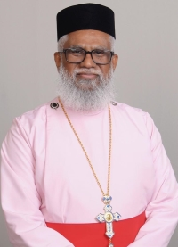

5088 Baxter Well Rd, McKinney, TX 75071
Join us for Sunday service to worship, hear the word of God, and deepen your faith. Our community is here to support your spiritual journey and provide comfort and inspiration.
More About St. Paul's
Sunday - 8:30 AM
5088 Baxter Well Rd, McKinney, TX 75071
Sunday - 9:30 AM
5088 Baxter Well Rd, McKinney, TX 75071
It is with great joy that I welcome you to St. Paul's Orthodox Church. As the vicar of this loving community, I am ecstatic to share with you the wonderful work that God is doing in our midst. At our church, we believe that each person is made in the image of God and that we are all called to love and serve one another as Christ did. We strive to create an atmosphere of acceptance and love, where people can come as they are and experience the transforming power of God's grace.
We offer a variety of programs and spiritual organizations for people of all ages, including worship services, prayer groups, youth groups, and sunday school. Whether you are looking to deepen your faith, connect with others, or serve your community, there is a place for you at our church.
As we journey together, we seek to grow in our understanding of God's love and to share that love with others. We invite you to join us on this journey and to experience the beauty and joy of a life transformed by God's grace.
Please take some time to explore our website and learn more about our church and the many ways we seek to serve our community. If you have any questions or would like to get involved, please do not hesitate to reach out.
May the grace and peace of Christ be with you always.
Yours in Christ,
Very Rev Fr. Raju M Daniel Cor-Episcopa
Email: vicaratstpaulsoc@gmail.com
Phone: (214) 476-6584
St. Paul's Orthodox Church offers a range of services to its members and visitors. One of the primary services is regular Sunday worship services(Holy Qurbana). These services typically consist of a liturgy that includes prayers, hymns, and readings from the Bible. The liturgy is conducted in Malayalam, the native language of Kerala, the state where the church has its roots. However, services are also conducted in English.
In addition to regular worship services, the Indian Orthodox Church also offers special services for major feasts and holy days throughout the year. These services are marked by special liturgies, processions, and other rituals that highlight the significance of these events in the church calendar. Some of the major feasts celebrated by the church include Christmas, Epiphany Great Lent, Palm Sunday, Maundy Thursday, Good Friday, Easter, and Pentecost.
St. Paul's Orthodox Church also provides various sacraments to its members. These include Baptism, Chrismation, Holy Eucharist, Confession, Holy Unction, Holy Orders, and Holy Matrimony. Each of these sacraments is seen as a way of encountering God's grace and receiving spiritual blessings. The church places great importance on the sacraments and provides them to members in a way that is faithful to the teachings of the Bible and the traditions of the church.
In addition to spiritual services, the Indian Orthodox Church is also committed to social and charitable activities and places a strong emphasis on education and offers various educational programs and institutions to foster religious education and spiritual growth among its members.
St. Paul's Orthodox Church is a vibrant community committed to helping its members deepen their faith and live out their values through worship services, sacraments, social and charitable activities, and educational programs.